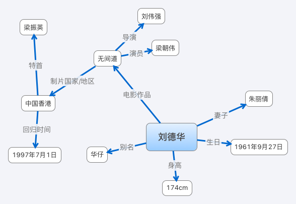

知识图谱
起源
知识图谱于2012年5月17日被Google正式提出， 其初衷是为了提高搜索引擎的能力，增强用户的搜索质量以及搜索体验。，RDF (resource description framework)[1]模式(RDF schema) （应用）和万维网本体语言(Web ontology language，OWL) 的形式化模型就是基于上述目的产生的。
[1]RDF: RDF是一个处理元数据的XML,RDF使用XML语法和RDF Schema（RDFS）来将元数据描述成为数据模型。是描述语义层面的本体关系的语言。
[2]数据模型: 数据模型（Data Model）是数据特征的抽象。数据（Data）是描述事物的符号记录，模型（Model)是现实世界的抽象。数据模型所描述的内容有三部分：数据结构、数据操作和数据约束。
定义
知识图谱是Google用于增强其搜索引擎功能的知识库。本质上,知识图谱是一种揭示实体之间关系的 语义网络（semantic network） ,即具 有有向图结构的一个知识库，其中图的结点代 表实体（entity）或者概念（concept），而图的 边代表实体/ 概念之间的各种语义关系，可以对现实世界的事物及其相互关系进行形式化地描述。现在的知识图谱已被用来泛指各种大规模的知识库。

应用领域
广泛应用于智能搜索、 智能问答、个性化推荐等领域。尤其是在智能搜索中，用户的搜索请求不再局限于简单的关键词匹配，搜索将根据用户查询的情境与意图进行推理，实现 概念检索。与此同时，用户的搜索结果将具有层次 化、结构化等重要特征。
分类
知识图谱也可分为通用知识图谱(开放链接知识库)和行业知识图谱(垂直行业知识库)。
通用知识图谱
通用知识图谱注重广度，强调融合更多的实体，较行业知识图谱而言,其准确度不够高,并且受概念范围的影响,很难借助本体库对公理、规则以及约束条件的支持能力规范其实 体、属性、实体间的关系等。通用知识图谱主要应 用于智能搜索等领域。行业知识图谱通常需要依靠 特定行业的数据来构建，具有特定的行业意义。
行业知识图谱
行业知识图谱中，实体的属性与数据模式往往比较丰富，需要考虑到不同的业务场景与使用人员。
架构
逻辑架构
知识图谱在逻辑上可分为 模式层 与 数据层 两个层次.
1、数据层
数据层主要是由一系列的事实组成，而知识将以事实为单位进行存储。如果用(实体1，关系， 实体2)、(实体、属性，属性值)这样的三元组来表达事实,可选择 图数据库 作为存储介质。
2、模式层
模式层构建在数据层之上，主要是通过 本体库 来规范数据层的一系列事实表达。 本体是结构化知识库的概念模板 ，通过本体库而形成的知识库不仅层次结构较强，并且冗余程度较小。
体系结构（构建模式）
知识图谱的体系架构知识图谱的体系架构是其指构建模式结构，如图1所示。其中虚线框内的部分为知识图谱的构建过 程，该过程需要随人的认知能力不断更新迭代。知识图谱主要有 自顶向下(top-down) 与 自底向上(bottom-up) 两种构建方式。
自顶向上
自顶向下指的是: 先为知识图谱定义好本体与数据模式，再将实体加入到知识库。该构建方式需要利用一些现有的结构化知识库作为其基础知识库，例如Freebase项目就是采用这种方式，它的绝大部分数据是从维基百科中得到的。
自底向上
自底向上指的是 从一些开放链接数据中提取出实体，选择其中置信度较高的加入到知识库，再构建顶层的本体模式 。目前，大多数知识图谱都采用自底向上的方式进行构建，其中典型就是 Google的Knowledge Vault。

关键技术
知识抽取
知识抽取
基于规则与词典的实体抽取方法
早期的实体抽取是在限定文本领域、限定语义 单元类型的条件下进行的，主要采用的是基于规则与词典的方法， 例如使用已定义的规则，抽取出文本中的人名、地名、组织机构名、特定时间等实体。
基于统计机器学习的实体抽取方法
随后，研究者尝试将机器学习中的 监督学习 算法用于命名实体的抽取问题上。单纯的监督学习算法在性能上 不仅受到训练集合的限制，并且算法的准确率与召回率都不够理想。相关研究者认识到监督学习算法的制约性后，尝试将监督学习算法与规则相互结合。
面向开放域的实体抽取方法
其基本思想是通过 少量的实体实例建立特征模型，再通过该模型应用于新的数据集得到新的命名实体。基于 无监督学习 的开放域聚类算法，其基本思想是基于已知实体的语义特征去搜索日志中识别出命名的实体，然后进行聚类。
关系抽取
关系抽取的目标是解决实体间语义链接的问题。主要有效的方法是基于马尔可夫逻辑网和基于本体推理的深层隐含关系抽取方法，主要有一下俩个分类。
开放式实体关系抽取
开放式实体关系抽取可分为二元开放式关系抽 取和n元开放式关系抽取。
基于联合推理的实体关系抽取
联合推理的关系抽取中的典型方法是马尔可夫逻辑网MLN(Markov logic network)[1]。
[1] 马尔可夫逻辑网:
属性抽取
属性抽取主要是针对实体而言的，通过属性可形成对实体的完整勾画。由于实体的属性可以看成是 实体与属性值之间的一种名称性关系 ，因此可以将实体属性的抽取问题转换为关系抽取问题。
大量的属性数据主要存在于半结构化、非结构化的大规模开放域数据集中。抽取这些属性的方法，一种是将上述从百科网站上抽取的 结构化数据作为可用于属性抽取的训练集，然后再将该模型应用于开放域中的实体属性抽取 。另一种是 根据实体属性与属性值之间的关系模式，直接从开放域数据集上抽取属性。
本体
定义
Gruber给出了Ontology的一个最为流行的定义,即“Ontology是概念模型[1] 的明确的规范说明”。
[1] 概念模型: “概念模型” 指通过抽象出客观世界中一些现象的相关概念而得到的模型。首先把现实世界中的客观对象抽象为某一种信息结构，这种信息结构并不依赖于具体的计算机系统，不是某一个数据库管理系统（DBMS）支持的 数据模型 ，而是概念级的模型，称为概念模型。
[2] 数据模型: 数据模型（Data Model）是数据特征的抽象。数据是描述事物的符号记录，模型是现实世界的抽象。数据模型为数据库系统的信息表示与操作提供了一个抽象的框架。数据模型所描述的内容有三部分：数据结构、数据操作和数据约束。
举例解释
上面的概念很抽象，不是很好理解，其实本体的概念有两层意思，一层是哲学层面的意思，一层是引申到信息科学中的语义层面的意思。
哲学上的本体
“鼠标”，“mouse”,
./
等都是表示”鼠标”这个本体的的”符号”。由此可见“本体”是只可意会不可言传的，因为所有的描述都成为了“本体”的外在符号，我们世界上的所有图像、语言、我们看到的、听到的、感受到的，都成为符号到本体的某种映射。
信息科学中的本体
Ontology是一种 描述术语 （包含哪些词汇）及 术语间关系 （描述苹果、香蕉、水果之间的关系）的概念模型。Ontology的形式可简单可复杂。最简单的词汇表（只定义术语集合，不定义术语之间的关系）也可以看成是一种“本体”；但严格意义上的本体，是既定义了术语、也定义了术语之间关系的。生活中，最常见、最成熟的本体，就属图书馆里的图书分类法。本体，以图书分类法为例，一方面限定了术语集合（即规定大家必须采用共同承认的一套词汇，禁止私自发明新词），另一方面定义术语之间的上下位关系（如：计算机技术隶属于工业技术，软件技术隶属于计算机技术，等等）。只要大家都认同该本体，并在实践中长期遵守该本体，依照它来编排和索引书目，那么日后寻找一本书就会非常方便。
引用
[1] 徐增林, 盛泳潘, 贺丽荣,等. 知识图谱技术综述[J]. 电子科技大学学报, 2016, 45(4):589-606.
[2] 漆桂林, 高桓, 吴天星. 知识图谱研究进展[J]. 情报工程, 2017, 3(1):4-25.
[3] 邓志鸿, 唐世渭, 张铭,等. Ontology研究综述[J]. 北京大学学报(自然科学版), 2002, 38(5):730-738.
[4]李国洪, 梁保城, 赵毅,等. Ontology研究的知识图谱演化[J]. 情报杂志, 2013(3):101-105.
[5] Gruber T R. A Translation Approach to Portable Ontology Specifications. Knowledge Acquisition ,1993 ,5 :199～220